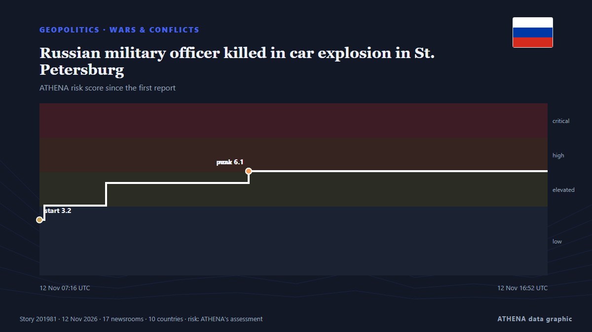

Geopolitics, Politics & Security
SponsoredPresented by  Cybernetics and Artificial Intelligence Lab Welcome to the Cybernetics and Artificial Intelligence Laboratory, established at the Department of Business Administration of the National and Kapodistrian University of Athens. The lab is headed by Professor Dimitrios Thomakos. The lab aims to do research that can be published in top venues. Our research uses tools and methods of Artificial Intelligence, and lies in the following areas: - Forecasting - Decision making - Cyber security - Finance We are always looking forward to collaborating with exceptional students!
Cybernetics and Artificial Intelligence Lab Welcome to the Cybernetics and Artificial Intelligence Laboratory, established at the Department of Business Administration of the National and Kapodistrian University of Athens. The lab is headed by Professor Dimitrios Thomakos. The lab aims to do research that can be published in top venues. Our research uses tools and methods of Artificial Intelligence, and lies in the following areas: - Forecasting - Decision making - Cyber security - Finance We are always looking forward to collaborating with exceptional students!

Wars & conflictsRussian military officer killed in car explosion in St. Petersburg
A Russian serviceman was killed when an explosive device detonated in his car in St Petersburg on 12 November. from Ukrainska Pravda (English)
| 30 Oct | 287 |
|---|---|
| 31 Oct | 153 |
| 1 Nov | 212 |
| 2 Nov | 316 |
| 3 Nov | 352 |
| 4 Nov | 397 |
| 5 Nov | 328 |
| 6 Nov | 227 |
| 7 Nov | 211 |
| 8 Nov | 199 |
| 9 Nov | 313 |
| 10 Nov | 282 |
| 11 Nov | 235 |
| 12 Nov | 143 |
Zelensky says Starshield speed limited again, hampering Ukraine’s defences
It comes after a similar incident in mid-October. from The Straits Times
Russia-US-Ukraine trilateral talks resume for second day in Abu Dhabi
Rustem Umierov said Ukraine's team is en route to Abu Dhabi for trilateral talks on 10-11 November, with European and NATO representatives also attending. from Ukrainska Pravda (English)
Trump says US no longer needs Iran deal
Qatari PM says US willing to seek solution to war with Iran. from Al Jazeera English
Saudi coalition says intercepted 3 Houthi missiles fired at Riyadh
Saudi-led coalition claims Houthi missile destroyed over Eastern Province The Saudi-led coalition air defences intercepted and destroyed a ballistic missile launched by the Houthis toward the… from Middle East Eye
Israeli strike on Gaza hospital kills at least six people, officials say
An Israeli airstrike on a hospital in southern Gaza overnight killed at least six people, the Health Ministry in the Palestinian enclave said Thursday. from NBC News (World)
London court finds 2 Iranian men guilty of spying for Tehran
Two Iranian men have been found guilty of spying on journalists in London for Tehran. from ABC News (International)
Lula to visit Madrid on Monday to meet Sánchez, two weeks before Spain’s election
Lula’s re-election makes it more likely Brazil can meet a key goal to end forest loss in the Amazon and builds confidence in a new fund to protect the world's rainforests, experts say. from Climate Home News
LOCAL ELECTIONS 2026: LIVE | First results show ANC support declined in traditional strongholds
Special voting gets underway on Monday and will continue on Tuesday. from SABC News
Peru: Pope Leo XIV returns to his adopted homeland on historic visit
Pope Leo XIV received a rapturous welcome in Peru, on 11 November, where he spent more than two decades as a missionary and bishop. from Euronews English
Carney in Ireland for meetings with European leaders, ahead of Asia summits
Government needs to be honest with us about the threats we face. from Irish Independent
Eisenkot Warns Netanyahu Against New Iran Strikes Before Israel Forms Government
Israelis head to the polls on October 27 in a vote that will cast Prime Minister Benjamin Netanyahu and his right-wing and religious allies against a motley crew of opposition parties. from Responsible Statecraft
Ukraine and Russia agree to large-scale prisoner exchange after second day of talks
Thousands of Ukrainians are held in Russian captivity. from The Independent
Iran designates Argentina's navy and air force as 'terrorist organisations'
Tehran has designated Argentina’s navy and air force as “terrorist organizations,” Iran’s Foreign Ministry said on Wednesday, in a reciprocal move following Buenos Aires’ designation of the Islamic… from Cyprus Mail
Turkish parliament approves Mecca defense pact with Pakistan and Saudi Arabia
Opposition Republican People’s Party (CHP) leader Kemal Kılıçdaroğlu has stated his party will vote in favor of a defense agreement between Türkiye, Pakistan and Saudi Arabia when it comes before… from Hürriyet Daily News
Iran will strike US bases in Europe in any war, warns Rezaei
Iranian officials have explicitly threatened in recent weeks to strike US military bases in Europe if they are used to launch attacks against Iran. from The New Arab
China accuses US of using spy claims to justify tech blockade
The comment follows claims that Nvidia boss Jensen Huang was the victim of a Chinese espionage plot. from Free Malaysia Today
Russian ambassador to US Alexander Darchiev dies suddenly at 66
The announcement called Darchiev ‘an outstanding diplomat, an experienced leader, a kind friend, and a mentor’ from The Independent
US House blocks bid to impeach Defense Secretary Hegseth
Republicans in the US House of Representatives blocked an effort on Tuesday to impeach Defense Secretary… from BusinessWorld
Drone attack triggers fire in Russia’s Baltic port of Ust-Luga, Ukraine says it launched attack
Ust-Luga is a major oil, oil products and grain export outlet, along with other commodities. from The Straits Times
Kennedy Family Sues To Block Trump’s 250-Foot Arch—Says It Would Cast Shadow On JFK’s Grave
Nine members of the Kennedy family are seeking to join a lawsuit to block the construction of President Donald Trump’s planned triumphal arch in Washington, D.C. from Forbes Business
US soldier arrested for Russia spying: What we know
A US Army member has been arrested by UK police under the National Security Act for allegedly assisting Russia. from Arab News
US charges 3 men over alleged Iranian-backed plot at UK Fairford air base
The men, including one who is already in jail, face charges over alleged plot at UK air base used in US war on Iran. from Al Jazeera English
Suspected drone attack halts production at Khor Mor in Kurdistan Region of Iraq
Production at the Khor Mor gas facility in Iraq’s Kurdistan Region remains suspended after a suspected drone attack on Nov. from World Oil
US Offers Up to $20 Million Reward for Information on Iran’s Nuclear Program
WASHINGTON, Nov 7: The United States has announced a reward of up to $20 million, along with possible relocation, for information about Iran’s nuclear program, including its facili... from Arab Times
Michigan election: How Abdul El-Sayed's critics smeared his defence of Palestinians as 'hate'
With New Hampshire and Georgia staying in Democratic hands, Republicans now look to Michigan for a pickup, where Democrat Abdul El-Sayed is competing with Republican Mike Rogers. from France 24 English
Russian negotiator rejects territorial swaps with Ukraine as Abu Dhabi talks end
Vladimir Medinsky — presidential aide and longtime chairman of the Russian Military Historical Society (RVIO) — once again led the Russian delegation at trilateral talks in Abu Dhabi. from Meduza (English)
Rubio hails 'very productive' Russia-Ukraine talks in Abu Dhabi
Rubio says Russia-Ukraine Abu Dhabi talks 'very productive' from Khaleej Times (working feed)
Hasina seeks new passport in clearest sign of Bangladesh return
The request marks the clearest step by Hasina to act on her plan to return to Bangladesh in December. from Express Tribune
Iraq bars plane carrying Iran’s football team from landing in Basra over US sanctions
Iraq barred a plane carrying Iran’s national soccer team from landing at Basra airport on Tuesday, a decision by the Iraqi Civil Aviation Authority linked to US sanctions imposed on Iranian airlines… from Cyprus Mail
Israel: Eisenkot proposes October 7 probe as new Knesset sworn in
Ex-IDF chief Gadi Eisenkot has yet to forge a coalition that would allow him to replace Benjamin Netanyahu, despite the new Knesset being dominated by the critics of the current prime minister. from DW English
Rubio sees 'no need' to resume major strikes against Iran at G7
European members of the G7 had pressed Rubio at the meeting of foreign ministers of the group in Paris to avoid any new escalation against Iran. from The New Arab
Russia and Ukraine hold nearly 4 hours of U.S.-mediated talks in Abu Dhabi
The official said it was possible the envoys would travel to Russia at some point after the talks in order to meet with Putin. from TASS (English)